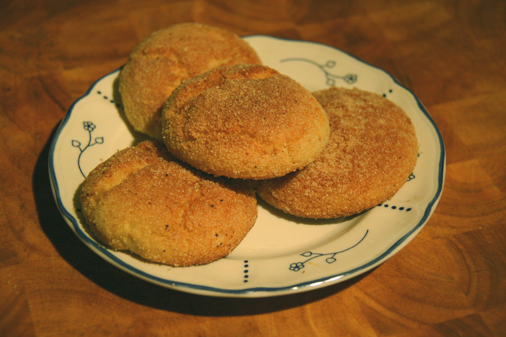

Harcha
Buttery semolina rounds with a sandy golden exterior and a tender, crumbly center.

About this dish
Harcha is a semolina griddle bread widely eaten in Morocco and also found elsewhere in the Maghreb. Unlike yeasted khobz or laminated msemen, harcha gets its distinctive texture from semolina grains coated in fat, a small amount of leavening and gentle pan cooking.
It is commonly served warm for breakfast or a snack with butter, honey, jam or soft cheese and a glass of mint tea. The crumb should be tender and slightly sandy rather than stretchy like wheat bread.
Part of a wider Maghrebi griddle-bread tradition
Modern Moroccan food references consistently place harcha among the country's familiar breakfast and snack breads. Morocco's tourism materials describe bread as a central daily staple and mint tea as an important gesture of hospitality, while contemporary Moroccan cultural guides identify harcha by its semolina base and characteristic crumbly texture.
Claims about a single precise geographic origin vary across published sources, and closely related semolina breads are also eaten in Algeria. Fringe Table therefore treats harcha as part of a shared Maghrebi bread tradition while presenting the Moroccan style reflected in this recipe.
Semolina grind, milk quantity, sweetness and thickness vary by household. The dough should guide you more than an exact liquid measurement.
Preparation notes
The granular semolina texture defines harcha. Fine semolina gives a tender crumb while still producing the characteristic sandy exterior.
Kneading develops structure that works against harcha's tender, crumbly texture. Mix only until the dough holds together.
Too much heat browns the outside before the center sets. A heavy pan over medium-low heat is easier to control.
Ingredients & detailed method
Ingredients
- 2 cups fine semolina, plus more for coating
- 2 tsp baking powder
- 1/2 tsp kosher salt
- 2 tbsp sugar, optional
- 1/2 cup melted butter, cooled slightly
- About 3/4 cup milk, added gradually
Method
- 1.Mix the dry ingredients. Combine semolina, baking powder, salt and sugar if using.
- 2.Coat the grains. Pour in melted butter and rub it through the semolina with your fingertips for 1–2 minutes. Checkpoint: the mixture should feel evenly damp and resemble coarse wet sand.
- 3.Rest the semolina. Let it stand 5 minutes so the grains begin absorbing the fat.
- 4.Add milk slowly. Mix in about 1/2 cup milk, then add more a tablespoon at a time until the dough just holds together.
- 5.Check the dough. Checkpoint: a squeezed handful should stay intact, but the dough should remain soft and slightly fragile rather than elastic.
- 6.Rest again. Let the dough sit 10 minutes. Semolina continues to hydrate, so resist adding extra liquid immediately.
- 7.Shape. Sprinkle the counter with semolina and gently pat the dough about 1/2 inch thick. Cut into rounds with a cutter or glass.
- 8.Coat the surfaces. Press each round lightly into semolina on both sides. Brush off heavy excess.
- 9.Preheat the pan. Heat a dry heavy skillet or griddle over medium-low heat for several minutes.
- 10.Cook the first side. Cook 4–6 minutes without moving constantly. Checkpoint: the underside should be evenly golden and firm enough to turn without cracking.
- 11.Finish. Flip gently and cook another 4–6 minutes. The center should feel set and spring slightly rather than compress like raw dough.
- 12.Serve warm. Let the rounds rest 2–3 minutes, then serve with butter, honey, jam, cheese or mint tea.